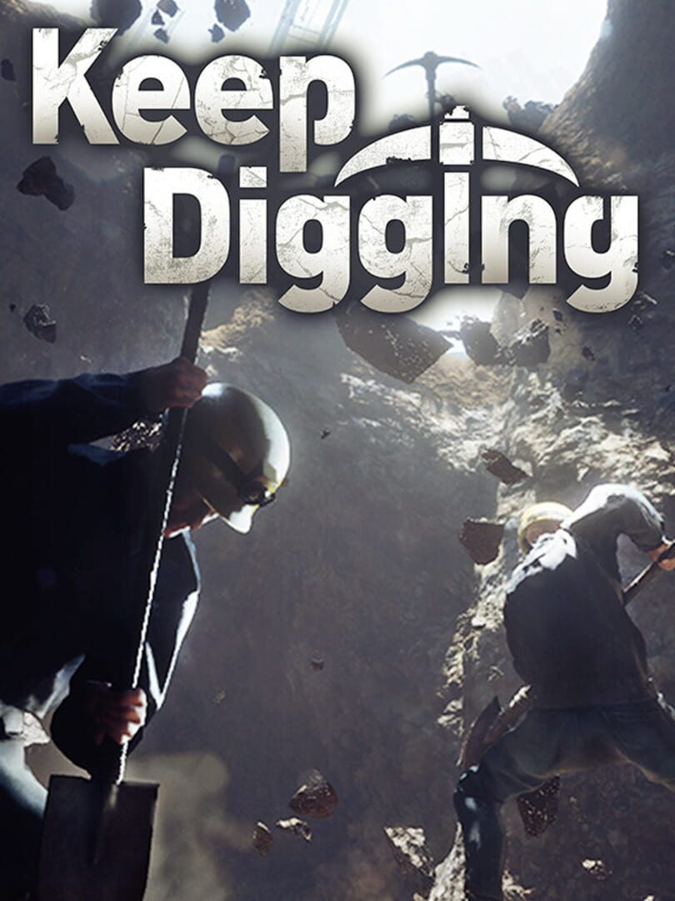

Keep Digging
Keep Digging
Details
|  | |
| Playtime | Not Played |
| Last Activity | Never |
| Added | 2025-10-02 9:20:53 |
| Modified | 2025-10-02 9:41:39 |
| Completion Status | Not Played |
| Library | Steam |
| Source | Steam |
| Platform | PC (Windows) |
| Release Date | 2025-09-11 |
| Community Score | |
| Critic Score | |
| User Score | |
| Genre | Adventure Indie Simulator |
| Developer | |
| Publisher | |
| Feature | Co-Operative Multiplayer Single Player |
| Links | Steam Official Website |
| Tag | 3D Adventure Casual Co-op Crafting Destruction Economy Exploration First-Person Inventory Management Management Mining Multiplayer Online Co-Op Procedural Generation Realistic Sandbox Simulation Singleplayer Voxel |
Description
What is Keep Digging
Keep Digging is a casual multiplayer game focused on digging, exploration, and treasure hunting. Players work together to uncover ores, treasures, and ancient technology, which can be used to upgrade gear and tools. Combat and stealth are absent, allowing the experience to focus purely on the fun of mining.
・Multiplayer: Up to 8 players can cooperate to explore the underground world
・Underground Exploration: 10 layers, reaching depths of 1,000 meters
・Gear & Technology: Equipment can be upgraded to level 20; over 8 types of upgradeable technologies available

Gear
Equipment improves mining efficiency and can be upgraded at workbenches. Upgrades enhance performance and often change appearance.
Sample gear:
・Shovels & Pickaxes
・Dynamite
・Wire Ropes
・Batteries
・Color Spray
Hidden technologies can be obtained through mining and merchant trades. Tools like shovels and color sprays allow creative interaction with the environment.

Multiplayer Features
・Items and currency earned in single-player can be brought into multiplayer sessions
・Rewards collected in other players’ worlds can be carried back to a home world
・Cooperative play emphasizes teamwork and shared discovery

Underground World
・A vast, multi-layered underground environment with dungeons, ore veins, and hidden treasures
・Designed for repeat exploration, supporting continuous digging and discovery

Character Creation
・Characters can be customized in appearance, including body shape and clothing
・Numerous emotes and skins are unlockable through progression and exploration

NPC Companions
・Reliable companions continue mining autonomously when players are offline
・Gear and upgrades increase efficiency and depth of mining, supporting ongoing progression